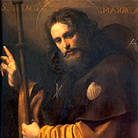
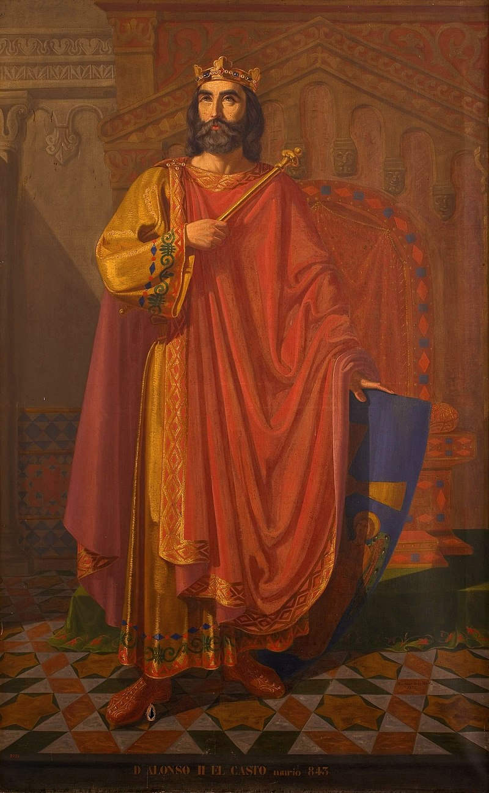
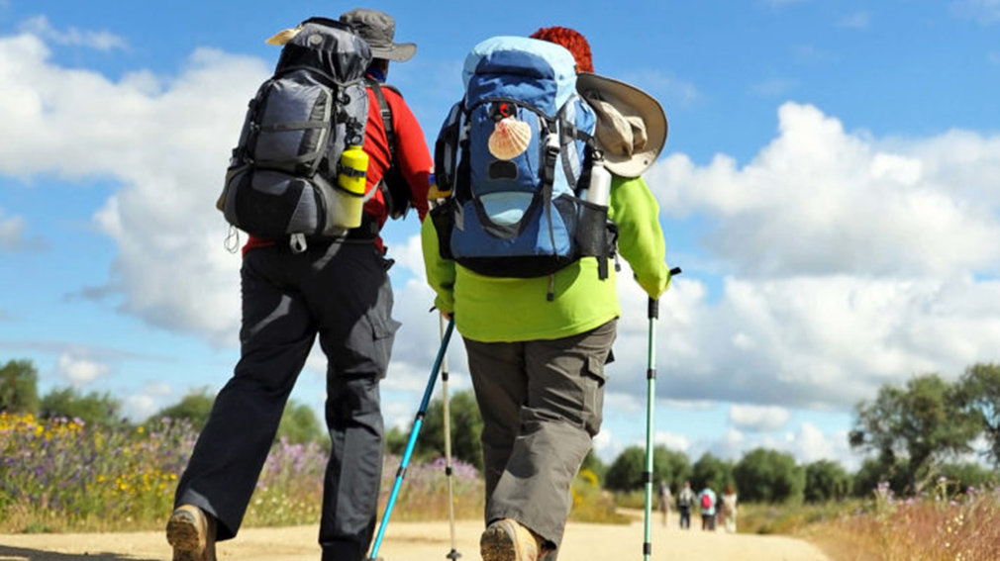

Historia
Santiago el Mayor
Santiago de Zebedeo o Santiago el Mayor fue uno de los apóstoles más destacados de Jesús de Nazaret. Es conocido como el Mayor para distinguirlo de otro apóstol con el mismo nombre. Santiago el Mayor pertenecia al llamado "círculo de dilectos" de Jesús que estuvo con él en ocasiones especiales. Él y su hermano Juan, también apóstol de Jesús, fueron apodados como "hijos del trueno" por su carácter impetuoso.
Trás el Pentecostes, cuando los apóstoles fueron enviados a la predicación, Santiago de Zebedeo cruzó el mar Mediterraneo y desembarcó en Hispania, comenzando a predicar en Gallaecia (Galicia) tras pasar las columnas de Hércules. Se dice que pasó por Portugal, Tarraco o incluso se postula su llegada a Carthago Nova (Cartagena) de donde partiría hacía el norte hasta acabar en A Coruña. Esta tradición hace de Santiago el santo patrón protector de España. hizo algunos discípulos, y siete de ellos fueron los que continuaron la tarea evangelizadora una vez que Santiago regresó a Jerusalén. Para ello fueron a Roma y fueron ordenados obispos por San Pedro. Son los siete Varones apostólicos.
Santiago habría hecho todo el viaje de vuelta desde España hasta Jerusalén para encontrar a María, madre de Jesús de Nazaret. Allí en Jesusalén murió decapitado por Herodes Agripa entre los años 41 y 44 siendo no solo el primer apóstol en morir sino también el primer mártir de la historia.
Los discípulos de Santiago recogieron el cuerpo de este y lo trasladaron hacía Hispania. Allí le dieron entierro en dominios de la reina Lupa hasta que en el Siglo IX fue descubierto su cuerpo.
Origen
En un momento impreciso de la década de 820-830 se produce el descubrimiento de la tumba de Santiago el Mayor. Un eremita del lugar de Solovio (donde hoy se alza la Iglesia de San Fiz de Solovio), de nombre Paio, localizó, en un bosque llamado Libredón, las ruinas de un primitivo enterramiento. Contienen las que serán identificadas como tumbas del apóstol Santiago y sus discípulos Teodoro y Atanasio.
En plena reyerta contra los musulmanes, siglo IX, el monarca Alfonso II ordena construir un sepulcro en el lugar donde se habían descubierto los restos del Apóstol, contribuyendo así al inicio de las peregrinaciones. Estamos en el germen de la actual catedral y de la ciudad de Santiago.
Otro personaje influyente que impulsó de una manera notable el auge de esta tradición fue el conquistador Carlomagno, el cual se aseguró de que todos los Caminos fueran seguros y dedicó parte de su vida a luchar contra las huestes musulmanas. Un siglo más tarde, la noticia de que el sepulcro del Apóstol se encontraba en Galicia, ya se había extendido por casi toda Europa, atrayendo a miles de peregrinos desde todas las partes del continente. En esta época, los edificios religiosos de toda Europa estaban atareados en construir templos con las mejores reliquias para así atraer a peregrinos, consiguiendo así que Santiago de Compostela sea uno de los destinos de peregrinación más importantes del mundo.
Se puede considerar que el propio Alfonso II, rey asturiano hasta el año 842, fue el primer peregrino como tal, al partir desde Oviedo para comprobar con sus propios ojos la veracidad del hallazgo del Apóstol y rendirle culto. Así nace el primer trazado jacobeo oficial, conocido como Camino Primitivo. Otro de los peregrinos más famosos fue Aymeric Picaud, a quien se le atribuye la autoría de parte del Códice Calixtino, concretamente la parte quinta conocida como “Guía del peregrino”. Este, al contrario que el rey astúr, decidió realizar el trazado conocido como Camino Francés, detallando en sus escritos información útil sobre alojamientos, templos, gastronomía, cultura, costumbres del lugar, etc.
Decadencia
En el siglo xvi se dieron varios factores que provocaron una profunda crisis en las peregrinaciones a la tumba del apóstol: decadencia cualitativa en la tipología de los peregrinos, aparición de la teología protestante y, unido a esto, los conflictos bélicos que ocurrieron en Francia y la peste.
Se habla de «decadencia cualitativa» del Camino para indicar que las personas que realizaban la peregrinación religiosa prácticamente desaparecieron, siendo sustituidas por unas tipologías de peregrinos de aquellos que la hacían por condena de un tribunal o por cuenta de otra persona que les pagaba, que habían ido apareciendo durante las décadas anteriores y que se expandieron de manera notable en este periodo. Igualmente, supuso un aumento de la inseguridad con el surgimiento de bandas de asaltantes en algunos puntos y el aumento de la criminalidad entre los propios peregrinos.
El comienzo de la Edad Contemporánea marcó también el de una nueva crisis que se tornará profunda con los años debido a una serie de factores, tanto materiales como espirituales, y que llevará a su casi desaparición a mediados del siglo xx. Se considera, tradicionalmente, que el punto de inicio lo marcó la Revolución francesa.
Auge
Tras la declaración del papa León XIII en 1884 de que los restos redescubiertos tras su desaparición eran realmente los del Apóstol y el posterior nombramiento de la ruta jacobea como Patrimonio Universal de la Humanidad, relanzaron esta ruta milenaria.
Desde la década de los 90, el Camino de Santiago ha experimentado un resurgimiento fantástico debido a los esfuerzos de promoción turística, pero también gracias al trabajo de los amantes del Camino y los cientos de voluntarios que entregan su vida y su trabajo en los albergues, hospitales y centros públicos.
Para hacerte una idea, 1,245 peregrinos llegaron a Santiago en 1985 y más de 100,000 en 1993, el año en que la ruta fue declarada Patrimonio de la Humanidad por la UNESCO. Para el Año Santo 2010, estos números llegaron a 270,000 y más de 327,000 obtuvieron su Compostela solo en 2018.
Caminos
Camino Primitivo
Inicio
Oviedo
Distancia
313 Km
Etapas
14
El Camino Primitivo es una opción maravillosa para descubrir las verdaderas raíces de la peregrinación, partiendo desde Oviedo y atravesando el Principado asturiano por occidente para acceder a Galicia por la provincia de Lugo hasta enlazar con el trazado del Camino Francés en el municipio de Melide, a escasos 55km Santiago de Compostela.
El recorrido atraviesa zonas montañosas poco pobladas, con paisajes de imponente belleza natural y sin apenas tramos por asfalto, lo que contribuye a su esplendor paisajístico. Además los recursos históricos y patrimoniales son de gran abundancia, especialmente en las dos ciudades monumentales que recorremos en nuestro trazado, Oviedo y Lugo, además de la propia Compostela que nos aguarda a nuestra llegada.
Camino del Norte
Inicio
Irún
Distancia
824 Km
Etapas
34
El Camino del Norte recorre toda la costa peninsular desde este a oeste bordeando el Cantábrico a lo largo de los principales municipios del norte de España. Parte de Irún en dirección a Compostela, dejando a su paso un rastro imborrable en ciudades como San Sebastián, Bilbao, Santander o Gijón hasta adentrarse en Galicia. Desde Gijón se nos presenta la decisión clave de nuestra peregrinación, ya que tenemos la opción de tomar un enlace que nos dirige hasta Oviedo para proseguir por el Camino Primitivo o, por el contrario, continuar el Camino del Norte en dirección Avilés y adentrarnos en Galicia por la localidad lucense de Ribadeo, un municipio costero de la Mariña Lucense que nos separa aproximadamente 180km de nuestra llegada a Santiago.
Camino Francés
Inicio
St. Jean Pied de Port (Francia)
Distancia
764 Km
Etapas
33
En 2004 recibió el Premio Príncipe de Asturias de la Concordia, por ser considerado como un exponente para la convivencia de personas y culturas y del desarrollo de las raíces europeas del cristianismo. Es el Camino de Santiago mejor señalizado, salvando la picaresca de algún hostelero que intenta llevar al peregrino a la puerta de su establecimiento, provocando de este modo pequeños desvíos de la ruta oficial; es el que cuenta con una mayor red de albergues públicos y servicios accesibles, pero es asimismo el más masificado, provocando que, especialmente en los meses de verano, llegar al siguiente albergue se convierta en una carrera de fondo para no quedarse sin plaza, obligando de este modo a emprender camino a horas casi intempestivas.
Dentro de su gran trazado existen dos puntos de inicio bastante comunes entre los peregrinos, aunque el inicio principal es la localidad de Saint Jean Pied de Port, muchos deciden comenzar el Camino de Santiago desde Roncesvalles, para así evitar cruzar la frontera entre España y Francia, y no subir la gran cuesta que las separa. La otra alternativa muy común es empezar desde Sarria, ya que cumple los más de 100 km necesarios para la Compostela y se pueden recorrer en 5 días, muy útil para la gente que se inicia o tiene poco tiempo para disfrutar del Camino.
Camino Portugués
Inicio
Lisboa
Distancia
620 Km
Etapas
25
Se trata de un Camino diferente: no encontraremos mesetas, alturas complicadas ni marcados desniveles como ocurre, por ejemplo, con el Camino Francés; pero sí podremos disfrutar de bosques y cruceros milenarios que esconden bajo sus mantos los cantares de los antiguos trovadores de la alta época medieval y las cantigas de amigo, amor y maldecir de Martin Codax o Mendiño.
En el siglo XX sufrió un pequeño proceso de estancamiento debido a la famosa aparición de la Virgen a tres pastores en la localidad lusa de Fátima, lo que propició que el Santuario que se levantó en honor a la virgen ocupara el protagonismo en detrimento de la ruta peregrina hacia Santiago. Sin embargo no tardaría mucho en aflorar de nuevo el sentimiento de devoción al Apóstol y el posicionamiento de la ruta a nivel internacional más allá de la península.
Via de la Plata
Inicio
Sevilla
Distancia
970 Km
Etapas
36
La Vía de la Plata es un trazado bien señalizado, donde las flechas amarillas destacan por su abundancia, lo que agradeceremos para no perdernos en los extensos dominios andaluces y extremeños. En esta comunidad existen además unos pequeños bloques de granito con azulejos de diferentes colores; si el azulejo es de color amarillo indican que el camino es transitable aunque no concordante con el camino original, mientras que si la marca es verde nos indica el trazado original de la ruta romana, no concordante de forma íntegra con la jacobea. Por ello debemos fijarnos que los bloques contengan o bien un azulejo amarillo o bien verde y amarillo al mismo tiempo, siendo de ese modo el mismo trazado que las flechas amarillas indican para llevarnos en dirección a Compostela.
Más de 700 kilómetros separan Sevilla de Astorga, a los que deberemos sumar la alternativa elegida para entrar en Galicia. Atrás quedan ciudades milenarias como la propia Sevilla, Mérida o la histórica Salamanca, además de un camino especialmente duro en las épocas de temperaturas elevadas al transitar durante muchos tramos por zonas sin sombra alguna. Por delante, un camino histórico con numerosos tesoros patrimoniales y culturales que hacen de esta Vía una de las alternativas que cada año cuenta con más adeptos.
Epílogo Fisterra-Muxía
Inicio
Santiago
Distancia
119 Km
Etapas
5
Al tratarse de un epílogo al trazado jacobeo propiamente dicho, existe la posibilidad de partir desde Santiago directamente hacia Finisterre y luego continuar a Muxía o realizar el camino inverso. ¡La elección está en tus manos! En cuanto a la señalización, está se encuentra en buen estado, siendo la primera concha la situada en el compostelano parque de San Lorenzo.
Es probable que te cruces con algún peregrino que camina en dirección opuesta, ¡no te asustes! Esto puede deberse a que han optado por realizar este tramo a la inversa, como hemos descrito anteriormente. Una vez en Finisterre o en Muxía tampoco tendremos problemas a la hora de orientarnos en una u otra dirección, actualmente son muchos los peregrinos que deciden visitar la maravillosa Costa da Morte.